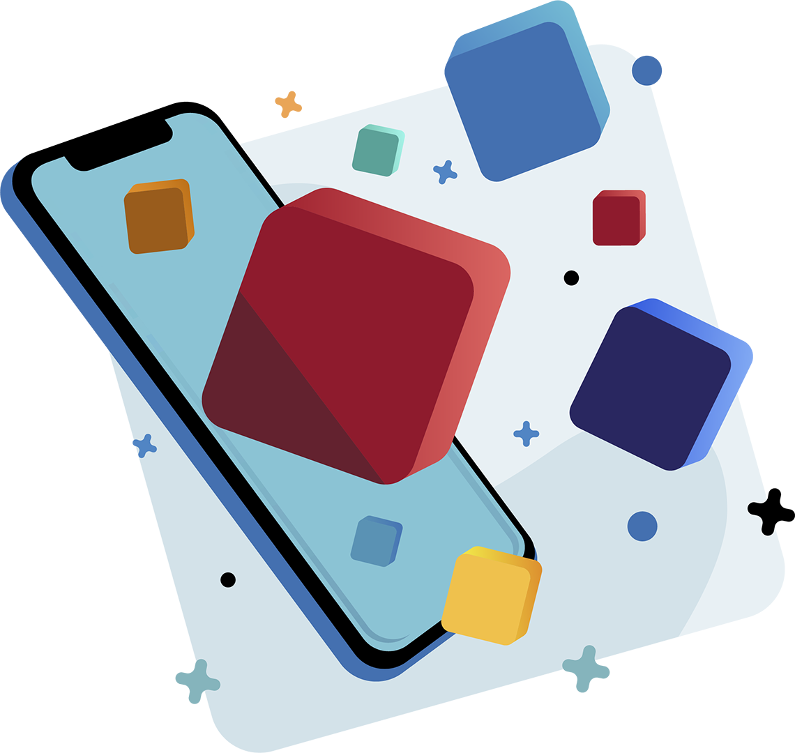

"AR APP" - программный продукт на базе операционной системы Android c элементами дополненной реальности, который позволит ознакомиться с музейными экспонатами в виде трехмерных объектов не выходя из дома. Для работы приложения поребуется лишь мобильное устройство с поддержкой AR.
